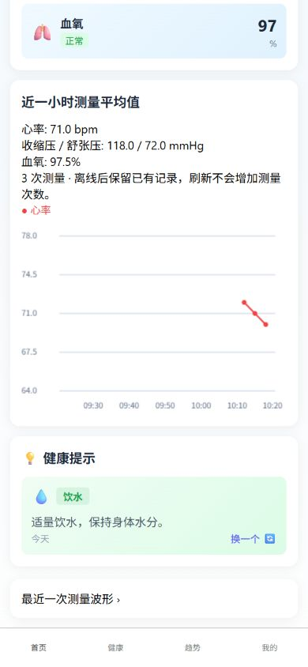
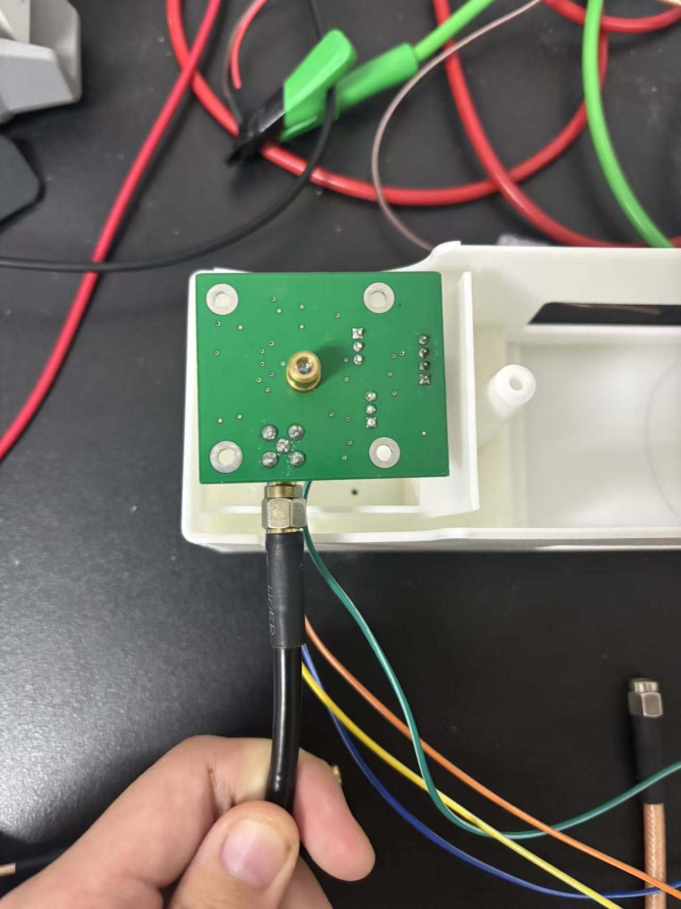
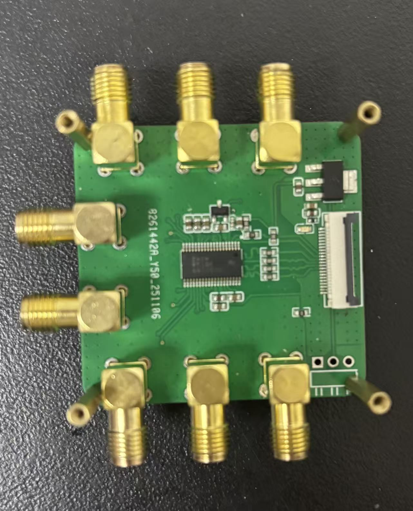

用激光反馈感知桡动脉微振
动脉壁微弱形变改变激光外腔长度，反馈光返回激光腔形成自混合干涉信号，再从时频特征估计血压与心率。
基于激光自混合干涉（SMI）的无袖带血管参数测量系统，从微振信号采集、嵌入式通信，到模型推理、数据库与移动 App 的完整工程链路。

项目目标不是只做一个预测模型，而是把 SMI 信号真正采下来、传上去、算出来、存下来，再用普通用户能理解的方式展示出来。我负责应用与服务端、ESP32 到服务器通信，以及算法重训练和部署优化。
动脉壁微弱形变改变激光外腔长度，反馈光返回激光腔形成自混合干涉信号，再从时频特征估计血压与心率。
以 Zhao 等人 2024 年 SMI 可穿戴传感论文及后续 RSAF、SA-CNN 研究为基础，完成采集、联网、部署、数据库和 App 产品化。
独立完成 App 前后端；打通 ESP32 上传；整理训练数据、重训练模型，并优化服务器算法调用方式。
已完成比赛展示和项目立项所需的端到端原型；仍需扩大真实真值样本并完成创新项目结题。
设备采集的二进制波形经过帧校验与去重，进入模型推理，再由后端持久化并提供给 App。每一层都有可独立部署的入口。
激光传感模块与 ADS8688 完成双通道采样。
LASER / ADCESP32 组织数据帧并向服务器可靠上传。
ESP32 / HTTPPython 调度 MATLAB 编译模型，输出血压与心率。
PYTHON / MATLABExpress 与 MySQL 提供账户、设备和历史趋势。
API / DATABASE / APP个人工作覆盖应用层、设备到云端的传输层，以及算法训练与部署优化。下面只列实际承担的部分。
完成 uni-app 前端、Node.js / Express 后端与 MySQL 数据设计，覆盖登录、设备绑定、健康总览、趋势、个人资料与双语界面。
打通二进制波形上传链路，完成帧格式校验、文件与元数据落盘、重复帧识别，以及算法任务的串行调度。
整理五特征训练路线，采用受试者级数据划分；同时将 MATLAB 模型封装为服务器可调用程序，统一输入输出与错误处理。
现役 App 已具备完整页面与交互。以下界面依据项目实际代码与运行截图整理，数值为展示数据，不代表医学验证结论。
将设备状态、核心指标、短期趋势和原始波形入口放在同一条用户路径。
按时间范围查看真实数据库记录，并支持中英文界面切换。
当前为科研原型；血氧仍是占位数据，袖带真值采集链路尚未完全接通，网站不将其包装成医疗产品。
下面不是概念效果图，而是当前代码实际运行后的页面截图。功能覆盖测量波形、设备绑定、历史趋势、个人资料、目标管理与帮助说明。





仓库保留 STM32F4、ADS8688 和 ESP32 工程，以及 Altium 原理图和 PCB 源文件。原型完成了传感、采集、传输和服务器接入的实物联调。




在 SMI 论文算法与后续 RSAF 时频增强、SA-CNN 研究基础上，我重新梳理五特征训练数据的来源、字段和质量状态，把旧表恢复成可追溯训练集，并将验证方式改为按受试者划分，降低同一人的脉搏周期同时出现在训练与测试中的数据泄漏风险。
身份隔离、跨集合重复
按 subject_id 划分采集会话来源文件、采集批次
保留 session_id脉搏周期缺失、范围、重复值
逐行质量标记统一旧工作簿中不一致的字段区域，检查缺失值、生理范围和完全重复记录，同时保留来源工作簿、行号与清洗结果。
训练、验证、测试以 subject_id 为边界，而不是随机拆分单行数据；同一人的数据不会跨集合。
对 SBP、DBP 分别训练五特征 CNN + 自注意力回归模型，归一化参数只由训练受试者拟合。
保留现役 MATLAB 编译模型，同时建立全 Python 重训练路线；由 Python 统一输入、进程调度、输出解析和异常处理。
结果边界：当前数据只有 7 名受试者，足以支撑工程流程验证，但不足以宣称临床泛化能力。网站只展示方法、数据治理与系统实现，不包装未经验证的准确率。
后端使用 Node.js / Express 与 MySQL。数据库初始化脚本、旧库迁移脚本和使用文档都已保留，覆盖用户、设备绑定、测量记录，以及后续扩展的健康记忆与对话记录。
执行 database/init.sql 创建核心表和外键；旧数据库通过迁移脚本补充设备状态及最后活跃时间字段。
ESP32 帧经过接收服务校验与算法推理，后端将设备编号、测量时间和结果写入测量表，并刷新设备在线状态。
JWT 鉴权后按用户、设备与日期范围读取数据，服务端完成小时聚合、日/月趋势和最近记录查询。
密码使用哈希保存；数据库账号和 JWT 密钥通过环境变量配置，公开仓库不包含生产密钥和真实用户数据。
对设备编号与完整帧哈希进行短期去重，同时保持 HTTP 200 确认，避免发送端持续重试。
使用 Python 作为输入、进程和输出桥梁，串行调度编译后的模型程序，隔离临时文件与运行时资源。
避免同一受试者数据同时进入训练集与验证集，减少数据泄漏带来的虚高结果。
审计并记录兜底预测、血氧占位和真值链路缺口，为下一阶段实验留下可信基线。
这个项目经历过多套 App、算法编译方式和服务器脚本。最终整理时，我没有把所有历史版本都留在现役目录，而是以可部署链路为主线，保留必要的原始 MATLAB 算法和训练依据。
从登录、资料和设备绑定扩展到测量记录、历史趋势、波形分析、每日目标与中英文界面。
设计并验证二进制上传、帧完整性检查、重复测量识别、算法任务调度和结果回传。
整理五特征数据集，建立按受试者划分的 Python 训练路线，同时保留服务器现役 MATLAB 编译模型。
统一目录、数据库说明、部署脚本和版本记录，并用真实截图、硬件照片与奖项证书形成可核验作品集。
团队：陈一丹、张博涵、蒙金涛｜指导教师：赵宇
项目当前仍在实施阶段，尚未结题。
我关心的不只是“算法能跑”，而是信号如何被可靠采集、计算、存储，并最终成为用户能理解的产品。